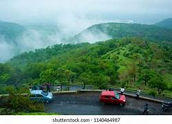

Chikhaldara Hill station
• Chikhaldara is a hill station and a municipal council in the Amravati district in the Indian state of Maharashtra.
Chikaldhara, literally translates from Marathi to mud stream/falls (chikal + dhara). Hindus claim that this place was featured in the epic of the Mahabharata; it is where Bheema killed the villainous Keechaka in a herculean bout and then threw him into the valley. It thus came to be known as Keechakadara, which eventually colloquialised to Chikaldhara. There is, however, not much evidence apart from hearsay to support this argument.[citation needed]
The sole hill resort in the Vidarbha region, it is situated at an altitude of 1118 meters with highest elevation point 1188 meters and has the added dimension of being the only coffee-growing area in Maharashtra. Chikhaldara has an annual rainfall of 154cm. Temperatures vary from 39C in summer to 5C in winter. The best months to visit are from October to June.
It abounds in wildlife, such as tigers, panthers, sloth bears, sambars, wild boar, and rarely seen wild dogs. Close by is the Melghat Tiger Project which has 82 tigers.[citation needed]
Tourism and events

•Since the area is heavily forested and the population count is low, there are no big festivals in Chikhaldara like in the rest of India. Only at the Jain temples that exist in the area, the pujas are held regularly.[1]
Chikhaldara is a small hill station in the Indian state of Maharashtra. As it is the only coffee-growing area in the region, it is visited by tourists who come solely to taste the region's coffee.[citation needed] Apart from the coffee plantations, Chikhaldara has several lakes, waterfalls, old forts, temples, and viewpoints.[citation needed]
Most beautiful point in chikhaldara
•Bhimkund
•Panchbol point

•devi point

•Semadoh Lake

History
•Chikhaldara was discovered by Captain Robinson of the Hyderabad Regiment in 1823. The Englishmen found it particularly attractive because the lush green hue of the place reminded them of England. When the leaves fell in September/October, they were reminded of autumn in England. There was even a proposal to make it the seat of the Government of India.
Climate
•June, July, August, and September are the four months of Monsoon. Chikhaldara experiences heavy rainfall during these months. The average temperature during monsoon is twenty-five degree celsius and during winter it goes below 15°C. Summer is not pleasant in this place because the temperature is very high . It is good not to visit Chikhaldara during summer because the temperature here lies between 32°C to 40°C.[2]
According to Köppen climate classification, climate of Chikhaldara is categorized as Humid Subtropical, Cwa. Chikhaldara has four distinct seasons - Winter, Summer (Late winter and early summer can be called spring but is of very short duration), Monsoon (Rainy season) and Post-monsoon or Autumn. Summers are hot and long, from mid-March to Early June. Summer temperature varies from 16°C to 41°C. Monsoon starts in early June and lasts till early October. July and October are wettest months. Chikhaldara receives averagely 1600 mm of rainfall annually. Mist following morning rain is common. Monsoon temperature ranges from 18°C to 26°C. Post-Monsoon starts mid-October and lasts till mid-November. Autumn, which is a transition between Post-Monsoon and Winter, is of short duration and lasts from mid-November to mid-December. Temperature during post monsoon and autumn ranges from 12°C to 30°C. Winters of Chikhaldara are mild with chilly, foggy mornings; pleasant, clear and sunny days; hazy and calm evenings and hazy, cool nights. Temperature in winter ranges from 4°C to 23°C.
Location